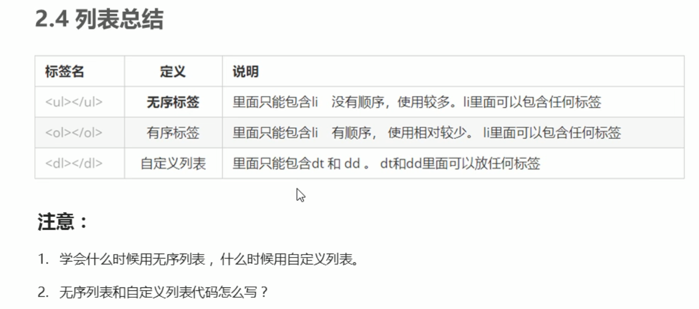

选择器分类
选择器分为“基础选择器”和“复合选择器”两大类。
基础选择器是由单个选择器组成的，
基础选择器又包括：标准选择器、类选择器、id选择器、通配符选择器
标签选择器：
标签选择器（元素选择器）是指用html标签名作为选择器。
这是一个p标签
这是一个div标签
类选择器：
类选择器口诀：样式点（.）定义，结构类（class）调用，一个或多个，开发最常用
想要差异化不同的标签，单独选择一个或者某几个标签，可以使用类选择器。
注意：在标签class中可以写多个类名，多个类名需要空格隔开，如
class="div1 div2"
多类名使用场景：可以把一些相同的标签元素放在一个类里面，方便修改
案列：使用选择器画三个盒子
这是类选择器
这是类选择器
这是类选择器
id选择器
id选择器口诀：样式#定义，结构id调用，只能调用一次，别人勿使用。
id选择器可以直接使用标有id的html元素标签
css中id选择器以#来定义
这是id选择器
id选择器跟类选择器的区别
类选择器(class)相当于人的名字，一个人可以有多个名字，同时一个名字也可以被多个人使用。
id选择器（#）相当于人的身份证号码，时全国唯一的，不能重复。
通配符选择器(*)
使用*定义,它表示直接选取页面上所有元素(标签)，能把所有的,HTMl,body,div,span,li等等都改成红色

css字体
css使用font-family来定义文本的字体系列。
如：
p{
font-family:"微软雅黑","宋体";
}
div{
font-family:"microsoft yahei",arial
}
1.各种字体之间必须使用英文逗号隔开。
2.一般情况下，如有空格隔开的多个单词组成的字体需要加引号。
3.尽量使用系统自带的字体，保证所有用户能正常显示。
4.可以使用中文。
5.可以使用多个字体，浏览器会自动依次识别用户是否有安装该字体并使用。
css字体大小
css使用font-size属性定义字体大小
如：
p{
font-size: 20px;
}
1.px(像素)大小是我们网页最常用的单位
2.谷歌浏览器默认文字大小是16px
3.不同浏览器默认文字大小不一样，尽量给一个明确数值，不要使用默认大小
4.可以给body（网页主体）指定整个页面文字大小。
5.标题标签比较特殊，需要单独指定文字大小。
css字体粗细
css使用font-weight属性来设置文字粗细，
如：
p{
font-weight: 700;
}
p{
font-weight: 400;
}
实际开发中我们更提倡使用数字表示加粗或者变细，数字后面不用跟单位。
1.normal : 正常的字体。相当于number为400。声明此值将取消之前任何设置
2.bold : 粗体。相当于number为700。也相当于b对象的作用
3.bolder : IE5+ 特粗体
4.lighter : IE5+ 细体
5.number : IE5+ 100 | 200 | 300 | 400 | 500 | 600 | 700 | 800 | 900
css文字字体样式
如：
div4{
/* 让文字倾斜 */
font-style: italic;
}
div4{
/* 让倾斜的字体,不倾斜 (重点记住)*/
font-style: normal;
}
注意：我们平时很少我们平时很少给字体加斜体，反而要给斜体标签（em，i）改为不倾斜字体。
案列练习：想要div4字体倾斜，加粗，大小为20px 微软雅黑字体
日常搏一搏，女神变老婆
#div5{
font-style: italic;/* 字体倾斜 */
font-weight: 700;/* 加粗 */
font-size: 20px;/* 字体大小 */
font-family: "microsoft yahei";/* 字体样式 */
color: #ffff7f;/* 字体颜色 */
width: 500px;/* 宽 */
height: 50px;/* 高 */
background-color: black;/* 背景颜色 */
}
css装饰文本
#p{
/* id选择器 */
text-decoration: underline ;/*下划线*/
}
a{
/* 类选择器 */
text-decoration: none ;/* 删除a标签（超链接）默认的下划线 重要*/
}
参数：
none : 无装饰
blink : 闪烁
underline : 下划线
line-through : 贯穿线
overline : 上划线
注意：
重点记住如何添加下划线（text-decoration: underline ;）
如何删除下划线（ext-decoration: none ;）
css文本缩进（可以使用负数）
跟12的标签选择器（html标签名）冲突（修改p标签字体大小）
如：
文本第一行，缩进多少距离。文本第一行，缩进多少距离。文本第一行，缩进多少距离。文本第一行，缩进多少距离。文本第一行，缩进多少距离。
文本第一行，缩进多少距离。
文本第一行，缩进多少距离。文本第一行，缩进多少距离。文本第一行，缩进多少距离。文本第一行，缩进多少距离。文本第一行，缩进多少距离。
文本第一行，缩进多少距离。
文本第一行，缩进多少距离。文本第一行，缩进多少距离。文本第一行，缩进多少距离。文本第一行，缩进多少距离。文本第一行，缩进多少距离。
文本第一行，缩进多少距离。
.div5{/* 类选择器(class) */
/* 文本第一行，缩进多少距离 */
/* text-indent: 20px; */
/* 可以是负数 */
/* 如果此时写了2em 则是缩进当前元素，两个文字大小，em是一个相对单位，就是当前元素font-size(字体大小)1个文字大小， */
text-indent: 2em;/* 文本第一行，缩进多少距离 */
font-size: 10px;/* 字体大小 */
}
css行间距
line-height用户设置行间的距离（行高），可以控制文字与行之间的距离。
示例：
div {line-height:6px; }
css的三大样式表
1.行内样式表（行内式）
行内样式表（内联样式表）是在元素内部中的style属性中设定css样式。适用于简单的修改。
如：
(div style="color: #FF0000; font-weight: 700;">让字体加粗(/div)
2.内部样式表（嵌入式）
内部样式表（内嵌样式表）就是写到HTML内部，是将所有css代码抽取出来，单独放到 style 标签中。
通过此方法可以方便控制整个页面中的元素样式设置
3.外部样式表（链接式）
样式单独写到css文件中，之后把css文件引入到HTML页面中。在html中使用link标签引入css文件
如：
link rel="stylesheet" href="css文件路径"/>
注意，一般放在html页面头部。